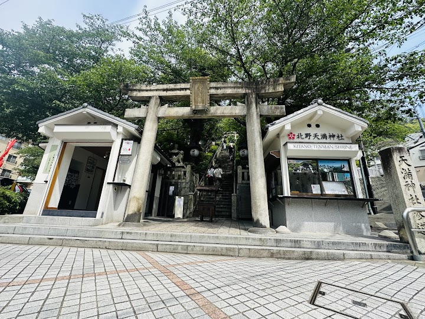
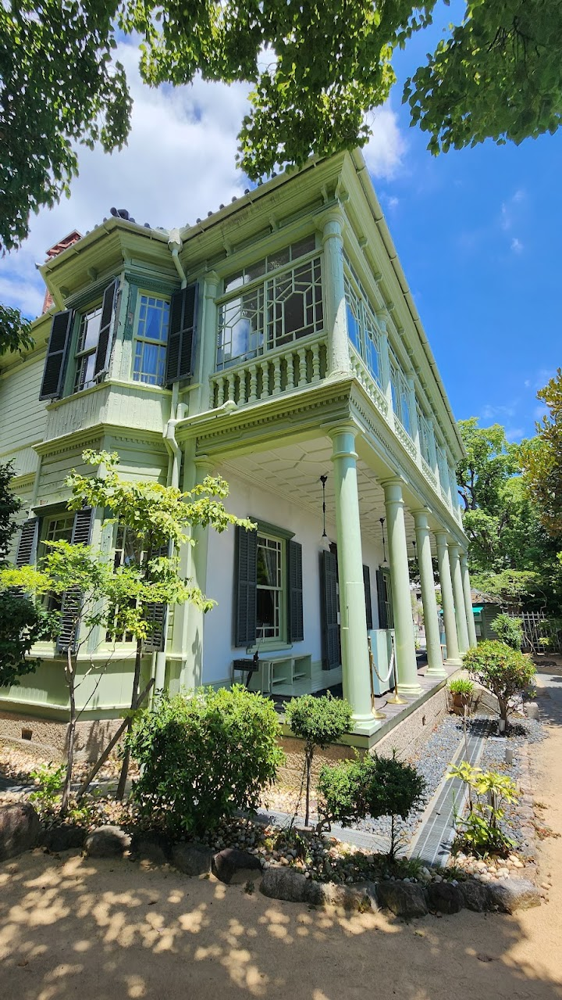
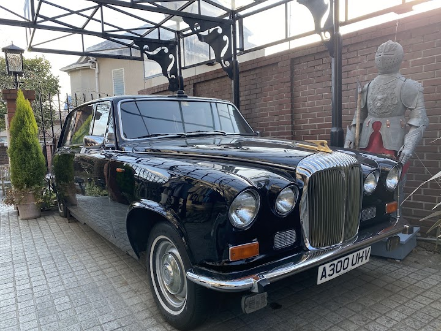
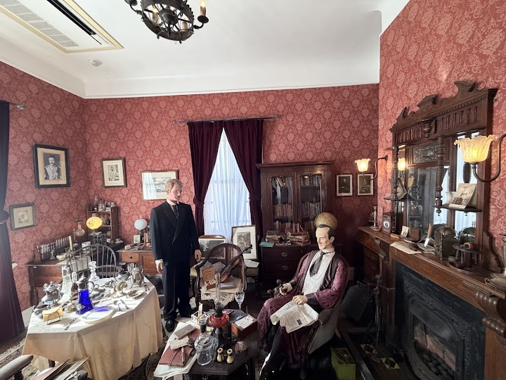
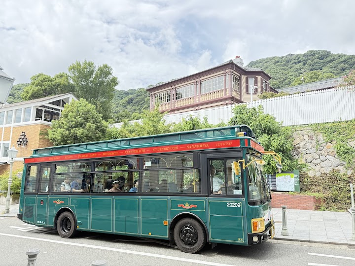

Kitano Ijinkan-gai (suggested)
Kitano Ijinkan-gai is a scenic hillside district of Western-style homes built by foreign merchants and diplomats after Kobe's port opened. Several of the houses can be visited, and the streets give a pleasant view over the city.
Open in Google Maps (street view, more photos and reviews there)






Visitor tips on finding it and getting there
I was told that this is one of the must-visit attractions in the area, so I decided to check it out. It's an easy and enjoyable uphill walk from **Sannomiya Station**, with the route being short enough that most visitors shouldn't have any trouble reaching it. The moment I arrived, I could immediately see why it's so popular. The district has a distinctly European atmosphere, with beautifully preserved Western-style buildings that reflect Kobe's international history. As you wander through the streets, you'll also find charming cafés, restaurants, boutiques, and small shops that add to the ne
Kobe Kitano Ijinkan-Gai was one of the most pleasant surprises of our visit to Japan. Perched on the hillside above the city, it feels completely different from the busy streets below. The area is beautifully maintained, peaceful, and full of character, with elegant Western-style houses, quiet lanes, and lovely gardens that reflect Kobe’s unique international history. What I enjoyed most was simply wandering without a plan. Around every corner there seemed to be another charming building, viewpoint, or hidden café. The views over Kobe and the harbour are spectacular, especially from the highe
I went there at 3pm and only can explore 3 houses (england, france, and ben house) england is focused more on sherlock, france has several themes inside that u can explore, ben house is the most impressive for me personally I recommend you come before mid day or in the morning if you want to explore more in the area bcs there are a lot to explore! and I recommend u to buy a bundle ticket since its cheaper